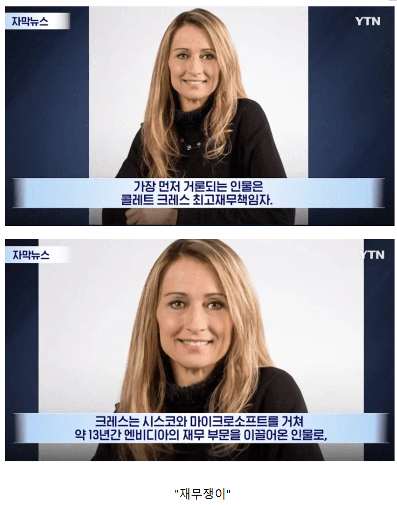

2만불에 팔수있는걸 RTX라는 이름으로 1만불에 판다고?

2만불에 팔수있는걸 RTX라는 이름으로 1만불에 판다고?
크르니자크를 벌써 잊었더냐 이 머저리들아 ㅋㅋㅋㅋ
크르니자크는 엔지니어출신아님?
하는 짓은 누구보다 재무쟁이 스타일이었음
그럼 출신보다 어떤 사람인지가 더 중요한거아냐? 당연한거지만
뉴스에서 2명 소개 했는데 1명만 쳐갖다놨네 ㅋㅋㅋㅋ
뒤에 남자 엔지니어 있음
진짜 좆됐네... 암드만이 미래다
왜 재무쟁이들을 밀어쥼? 미래가 뻔한데
pc용을 없애는거 아니야? ㅋㅋㅋ
시스코 MS 둘다 시총 1등 찍었다 내려온 기업이네 이제 앤비차례야?
찾아보니까 엔비디아에서 오히려 연구하는 R&D에 자본 더 할당해서 기술개발하게 하고, 인수합병 같은것도 성공적으로 해내서
댓글에서 비판하는 단기실적 단물쪽 재무놀이하는 사람은 아닌거 같은데
무슨 근거로 이런 똥글을 쌈?
그냥 다른 it기업들 재무쟁이 ceo앉혔다가 다 폭망해서 그런듯
재무쟁이는 밑에 있어야 그렇게 잘돌아감
진짜 개좆됨
와 씨발 얼마나 더 오를 까 ㅈ 됐네 진자
금발 백인 CEO치고 제대로 된 년없던데..
그나마 hp ceo했던 아줌마는 괜찮았을걸
아니구나 이년도 개년이었네 ㅋㅋㅋ
컴팩 합병이라는 미친짓을 ㅋㅋㅋㅋ
asml ceo도 회계사다
근데 여성에 재무에 금발백인...음..
amd 풀매수 가자. 이제 라데온의 시대다
Amd!
암드 사면 되냐